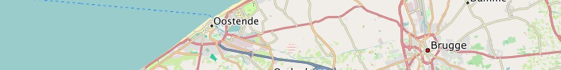
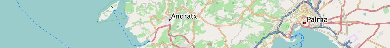
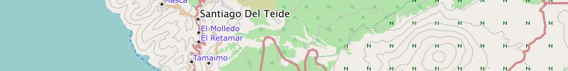
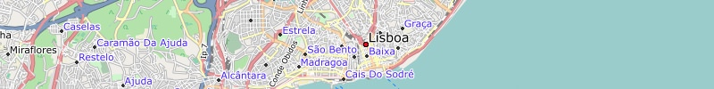
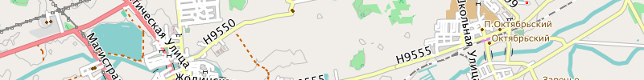

Belgien
Englisch
Garmin GPS-Gerät: (163 MB)
Belgien - Installationsimage für Micro-SD-Karte
Microsoft Windows: (163 MB)
Belgien - GMAP Installationsarchiv (komplett) für Garmin BaseCamp
Apple Mac OS X: (163 MB)
Belgien - GMAP Archiv für Garmin BaseCamp
Französisch
Garmin GPS-Gerät: (163 MB)
Belgien - Installationsimage für Micro-SD-Karte
Microsoft Windows: (163 MB)
Belgien - GMAP Installationsarchiv (komplett) für Garmin BaseCamp
Apple Mac OS X: (163 MB)
Belgien - GMAP Archiv für Garmin BaseCamp
Niederländisch
Garmin GPS-Gerät: (163 MB)
Belgien - Installationsimage für Micro-SD-Karte
Microsoft Windows: (163 MB)
Belgien - GMAP Installationsarchiv (komplett) für Garmin BaseCamp
Apple Mac OS X: (163 MB)
Belgien - GMAP Archiv für Garmin BaseCamp

Niederlande
Englisch
Garmin GPS-Gerät: (318 MB)
Niederlande - Installationsimage für Micro-SD-Karte
Microsoft Windows: (318 MB)
Niederlande - GMAP Installationsarchiv (komplett) für Garmin BaseCamp
Apple Mac OS X: (318 MB)
Niederlande - GMAP Archiv für Garmin BaseCamp
Niederländisch
Garmin GPS-Gerät: (318 MB)
Niederlande - Installationsimage für Micro-SD-Karte
Microsoft Windows: (318 MB)
Niederlande - GMAP Installationsarchiv (komplett) für Garmin BaseCamp
Apple Mac OS X: (318 MB)
Niederlande - GMAP Archiv für Garmin BaseCamp

Grossbritannien
Englisch
Garmin GPS-Gerät: (667 MB)
Grossbritannien - Installationsimage für Micro-SD-Karte
Microsoft Windows: (667 MB)
Grossbritannien - GMAP Installationsarchiv (komplett) für Garmin BaseCamp
Apple Mac OS X: (667 MB)
Grossbritannien - GMAP Archiv für Garmin BaseCamp

Dänemark
Deutsch
Garmin GPS-Gerät: (155 MB)
Dänemark - Installationsimage für Micro-SD-Karte
Microsoft Windows: (155 MB)
Dänemark - GMAP Installationsarchiv (komplett) für Garmin BaseCamp
Apple Mac OS X: (155 MB)
Dänemark - GMAP Archiv für Garmin BaseCamp
Englisch
Garmin GPS-Gerät: (155 MB)
Dänemark - Installationsimage für Micro-SD-Karte
Microsoft Windows: (155 MB)
Dänemark - GMAP Installationsarchiv (komplett) für Garmin BaseCamp
Apple Mac OS X: (155 MB)
Dänemark - GMAP Archiv für Garmin BaseCamp

Tschechien
Englisch
Garmin GPS-Gerät: (269 MB)
Tschechien - Installationsimage für Micro-SD-Karte
Microsoft Windows: (269 MB)
Tschechien - GMAP Installationsarchiv (komplett) für Garmin BaseCamp
Apple Mac OS X: (269 MB)
Tschechien - GMAP Archiv für Garmin BaseCamp

Spanien
Deutsch
Garmin GPS-Gerät: (672 MB)
Spanien - Installationsimage für Micro-SD-Karte
Microsoft Windows: (672 MB)
Spanien - GMAP Installationsarchiv (komplett) für Garmin BaseCamp
Apple Mac OS X: (672 MB)
Spanien - GMAP Archiv für Garmin BaseCamp
Englisch
Garmin GPS-Gerät: (672 MB)
Spanien - Installationsimage für Micro-SD-Karte
Microsoft Windows: (672 MB)
Spanien - GMAP Installationsarchiv (komplett) für Garmin BaseCamp
Apple Mac OS X: (672 MB)
Spanien - GMAP Archiv für Garmin BaseCamp

Kanarische Inseln
Englisch
Garmin GPS-Gerät: (27 MB)
Kanarische Inseln - Installationsimage für Micro-SD-Karte
Microsoft Windows: (27 MB)
Kanarische Inseln - GMAP Installationsarchiv (komplett) für Garmin
BaseCamp
Apple Mac OS X: (27 MB)
Kanarische Inseln - GMAP Archiv für Garmin BaseCamp

Finnland
Deutsch
Garmin GPS-Gerät: (276 MB)
Finnland - Installationsimage für Micro-SD-Karte
Microsoft Windows: (276 MB)
Finnland - GMAP Installationsarchiv (komplett) für Garmin BaseCamp
Apple Mac OS X: (276 MB)
Finnland - GMAP Archiv für Garmin BaseCamp
Englisch
Garmin GPS-Gerät: (276 MB)
Finnland - Installationsimage für Micro-SD-Karte
Microsoft Windows: (276 MB)
Finnland - GMAP Installationsarchiv (komplett) für Garmin BaseCamp
Apple Mac OS X: (276 MB)
Finnland - GMAP Archiv für Garmin BaseCamp

Italien
Deutsch
Garmin GPS-Gerät: (854 MB)
Italien - Installationsimage für Micro-SD-Karte
Microsoft Windows: (854 MB)
Italien - GMAP Installationsarchiv (komplett) für Garmin BaseCamp
Apple Mac OS X: (854 MB)
Italien - GMAP Archiv für Garmin BaseCamp
Englisch
Garmin GPS-Gerät: (854 MB)
Italien - Installationsimage für Micro-SD-Karte
Microsoft Windows: (854 MB)
Italien - GMAP Installationsarchiv (komplett) für Garmin BaseCamp
Apple Mac OS X: (854 MB)
Italien - GMAP Archiv für Garmin BaseCamp
Italienisch
Garmin GPS-Gerät: (854 MB)
Italien - Installationsimage für Micro-SD-Karte
Microsoft Windows: (854 MB)
Italien - GMAP Installationsarchiv (komplett) für Garmin BaseCamp
Apple Mac OS X: (854 MB)
Italien - GMAP Archiv für Garmin BaseCamp

Norwegen
Deutsch
Garmin GPS-Gerät: (579 MB)
Norwegen - Installationsimage für Micro-SD-Karte
Microsoft Windows: (579 MB)
Norwegen - GMAP Installationsarchiv (komplett) für Garmin BaseCamp
Apple Mac OS X: (579 MB)
Norwegen - GMAP Archiv für Garmin BaseCamp
Englisch
Garmin GPS-Gerät: (579 MB)
Norwegen - Installationsimage für Micro-SD-Karte
Microsoft Windows: (579 MB)
Norwegen - GMAP Installationsarchiv (komplett) für Garmin BaseCamp
Apple Mac OS X: (579 MB)
Norwegen - GMAP Archiv für Garmin BaseCamp

Bulgarien
Englisch
Garmin GPS-Gerät: (115 MB)
Bulgarien - Installationsimage für Micro-SD-Karte
Microsoft Windows: (115 MB)
Bulgarien - GMAP Installationsarchiv (komplett) für Garmin BaseCamp
Apple Mac OS X: (115 MB)
Bulgarien - GMAP Archiv für Garmin BaseCamp

Estland
Englisch
Garmin GPS-Gerät: (69 MB)
Estland - Installationsimage für Micro-SD-Karte
Microsoft Windows: (69 MB)
Estland - GMAP Installationsarchiv (komplett) für Garmin BaseCamp
Apple Mac OS X: (69 MB)
Estland - GMAP Archiv für Garmin BaseCamp

Griechenland
Deutsch
Garmin GPS-Gerät: (193 MB)
Griechenland - Installationsimage für Micro-SD-Karte
Microsoft Windows: (193 MB)
Griechenland - GMAP Installationsarchiv (komplett) für Garmin BaseCamp
Apple Mac OS X: (193 MB)
Griechenland - GMAP Archiv für Garmin BaseCamp
Englisch
Garmin GPS-Gerät: (193 MB)
Griechenland - Installationsimage für Micro-SD-Karte
Microsoft Windows: (193 MB)
Griechenland - GMAP Installationsarchiv (komplett) für Garmin BaseCamp
Apple Mac OS X: (193 MB)
Griechenland - GMAP Archiv für Garmin BaseCamp

Kroatien
Deutsch
Garmin GPS-Gerät: (91 MB)
Kroatien - Installationsimage für Micro-SD-Karte
Microsoft Windows: (91 MB)
Kroatien - GMAP Installationsarchiv (komplett) für Garmin BaseCamp
Apple Mac OS X: (91 MB)
Kroatien - GMAP Archiv für Garmin BaseCamp
Englisch
Garmin GPS-Gerät: (91 MB)
Kroatien - Installationsimage für Micro-SD-Karte
Microsoft Windows: (91 MB)
Kroatien - GMAP Installationsarchiv (komplett) für Garmin BaseCamp
Apple Mac OS X: (91 MB)
Kroatien - GMAP Archiv für Garmin BaseCamp

Ungarn
Englisch
Garmin GPS-Gerät: (105 MB)
Ungarn - Installationsimage für Micro-SD-Karte
Microsoft Windows: (105 MB)
Ungarn - GMAP Installationsarchiv (komplett) für Garmin BaseCamp
Apple Mac OS X: (105 MB)
Ungarn - GMAP Archiv für Garmin BaseCamp

Litauen
Englisch
Garmin GPS-Gerät: (77 MB)
Litauen - Installationsimage für Micro-SD-Karte
Microsoft Windows: (77 MB)
Litauen - GMAP Installationsarchiv (komplett) für Garmin BaseCamp
Apple Mac OS X: (77 MB)
Litauen - GMAP Archiv für Garmin BaseCamp

Lettland
Englisch
Garmin GPS-Gerät: (64 MB)
Lettland - Installationsimage für Micro-SD-Karte
Microsoft Windows: (64 MB)
Lettland - GMAP Installationsarchiv (komplett) für Garmin BaseCamp
Apple Mac OS X: (64 MB)
Lettland - GMAP Archiv für Garmin BaseCamp

Portugal
Deutsch
Garmin GPS-Gerät: (148 MB)
Portugal - Installationsimage für Micro-SD-Karte
Microsoft Windows: (148 MB)
Portugal - GMAP Installationsarchiv (komplett) für Garmin BaseCamp
Apple Mac OS X: (148 MB)
Portugal - GMAP Archiv für Garmin BaseCamp
Englisch
Garmin GPS-Gerät: (148 MB)
Portugal - Installationsimage für Micro-SD-Karte
Microsoft Windows: (148 MB)
Portugal - GMAP Installationsarchiv (komplett) für Garmin BaseCamp
Apple Mac OS X: (148 MB)
Portugal - GMAP Archiv für Garmin BaseCamp
Portugiesisch
Garmin GPS-Gerät: (148 MB)
Portugal - Installationsimage für Micro-SD-Karte
Microsoft Windows: (148 MB)
Portugal - GMAP Installationsarchiv (komplett) für Garmin BaseCamp
Apple Mac OS X: (148 MB)
Portugal - GMAP Archiv für Garmin BaseCamp

Rumänien
Englisch
Garmin GPS-Gerät: (236 MB)
Rumänien - Installationsimage für Micro-SD-Karte
Microsoft Windows: (236 MB)
Rumänien - GMAP Installationsarchiv (komplett) für Garmin BaseCamp
Apple Mac OS X: (236 MB)
Rumänien - GMAP Archiv für Garmin BaseCamp

Serbien
Englisch
Garmin GPS-Gerät: (75 MB)
Serbien - Installationsimage für Micro-SD-Karte
Microsoft Windows: (75 MB)
Serbien - GMAP Installationsarchiv (komplett) für Garmin BaseCamp
Apple Mac OS X: (75 MB)
Serbien - GMAP Archiv für Garmin BaseCamp

Slowakei
Englisch
Garmin GPS-Gerät: (102 MB)
Slowakei - Installationsimage für Micro-SD-Karte
Microsoft Windows: (102 MB)
Slowakei - GMAP Installationsarchiv (komplett) für Garmin BaseCamp
Apple Mac OS X: (102 MB)
Slowakei - GMAP Archiv für Garmin BaseCamp

Slowenien
Englisch
Garmin GPS-Gerät: (110 MB)
Slowenien - Installationsimage für Micro-SD-Karte
Microsoft Windows: (110 MB)
Slowenien - GMAP Installationsarchiv (komplett) für Garmin BaseCamp
Apple Mac OS X: (110 MB)
Slowenien - GMAP Archiv für Garmin BaseCamp

Türkei
Englisch
Garmin GPS-Gerät: (613 MB)
Türkei - Installationsimage für Micro-SD-Karte
Microsoft Windows: (613 MB)
Türkei - GMAP Installationsarchiv (komplett) für Garmin BaseCamp
Apple Mac OS X: (613 MB)
Türkei - GMAP Archiv für Garmin BaseCamp

Irland
Englisch
Garmin GPS-Gerät: (106 MB)
Irland - Installationsimage für Micro-SD-Karte
Microsoft Windows: (106 MB)
Irland - GMAP Installationsarchiv (komplett) für Garmin BaseCamp
Apple Mac OS X: (106 MB)
Irland - GMAP Archiv für Garmin BaseCamp

Island
Englisch
Garmin GPS-Gerät: (60 MB)
Island - Installationsimage für Micro-SD-Karte
Microsoft Windows: (60 MB)
Island - GMAP Installationsarchiv (komplett) für Garmin BaseCamp
Apple Mac OS X: (60 MB)
Island - GMAP Archiv für Garmin BaseCamp

Weißrussland
Russisch
Garmin GPS-Gerät: (128 MB)
Weißrussland - Installationsimage für Micro-SD-Karte
Microsoft Windows: (128 MB)
Weißrussland - GMAP Installationsarchiv (komplett) für Garmin BaseCamp
Apple Mac OS X: (128 MB)
Weißrussland - GMAP Archiv für Garmin BaseCamp

Azoren
Englisch
Garmin GPS-Gerät: (4.9 MB)
Azoren - Installationsimage für Micro-SD-Karte
Microsoft Windows: (4.9 MB)
Azoren - GMAP Installationsarchiv (komplett) für Garmin BaseCamp
Apple Mac OS X: (4.9 MB)
Azoren - GMAP Archiv für Garmin BaseCamp
Übrigens, manchmal probieren wir einfach mal was aus - wenn du bisher nicht fündig geworden bist - vielleicht lohnt das Stöbern in diesem Direkt-Download-Bereich.